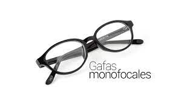
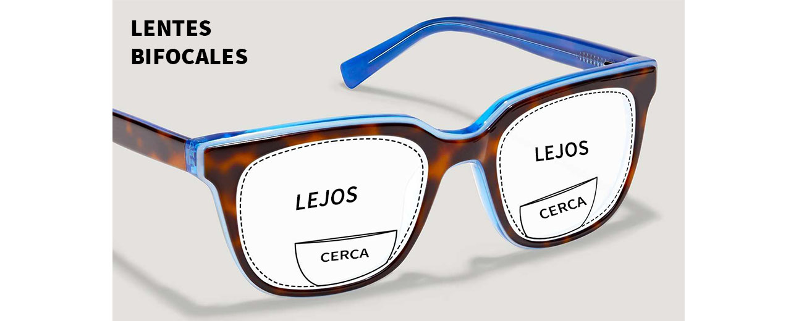
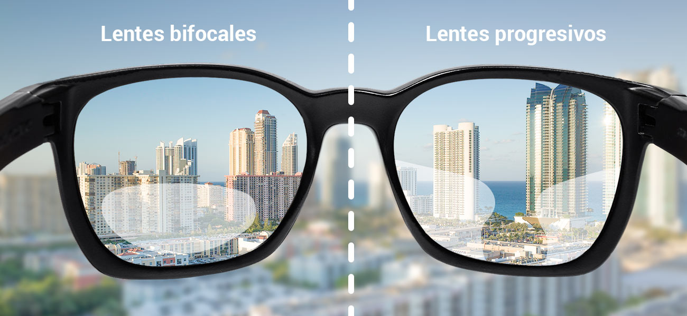
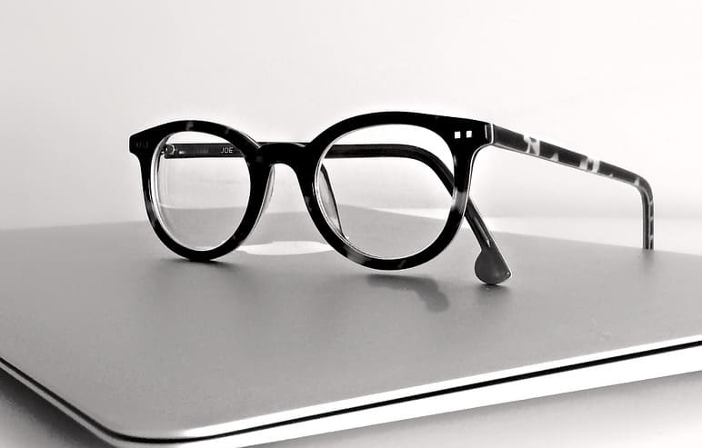

Les presentamso nuestros lentes.
| PRODUCTO | DESCRIBCION | PRECIO |
|  | Son aquellos que tienen la misma graduación en toda la superficie. Con ellas se puede corregir cualquier error refractivo o ametropía como miopía, hipermetropía, astigmatismo o presbicia. El diseño o tallado de una lente monofocal depende del defecto refractivo que quiera corregir. | 500 |
|  | Los lentes bifocales son aquellas que tienen dos graduaciones diferentes para permitir a la persona corregir errores o defectos refractivos en la visión de lejos y de cerca. Eran la mejor solución para las personas con presbicia. | 450 |
|  | Los lentes progrecibos tienen una graduación progresiva de cerca a lejos. De este modo, la parte inferior de la lente está graduada para visión de cerca, la parte central está graduada para la visión intermedia y la superior para visión de lejos. Los lentes progresivos no son todos iguales, hay productos de corrección más avanzados y otros más básicos. | 498 |
|  | Los lentes ocupacionales En este diseño, se establecen dos metros como la distancia máxima a la que el usuario de las lentes debe ver con claridad y nitidez. Esta versión es ideal para las personas que trabajan principalmente en el computador o leen mucho. | 200 |